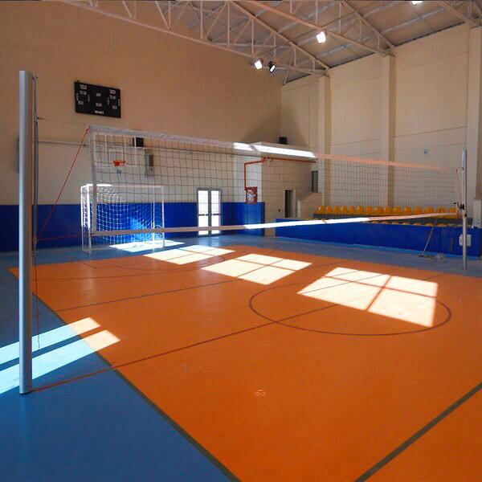

VOLEYBOL SPORU
VOLEYBOL SPORUSAYFAMIZA HOŞ GELDİNİZ

VOLEYBOL NEDİR?
Voleybol branşı 6 as toplam 12 kişiden oluşan 2 takım arasında oynanan spor branşıdır. Voleybolun amacı sahayı 2 eşit parçaya bölen file üzerinden topu rakip saha içerisine düşürmeye çalışmaktır. Oyuncular sahaya 3 hücum ve 3 savunma oyuncusu olacak şekilde yerleşirler. Hücum oyuncuları önde, savunma oyuncuları ise arkada dururlar. Bir takım topa art arda en fazla 3 kez vurabilir. 3 vuruşta topu rakip alana göndermek zorundadır. Voleybolda topa vücudunuzun her hangi bir uzvu ile vurmak serbesttir. Oyuncular sürekli olarak saat yönünde her sayı kaybedip, kazandıklarında dönerler. Voleybolda sayı kazanmak için topu ya rakip takımın sahasını içine düşürmek ya da topun rakipten dışarı gitmesini sağlamanız gerekmektedir.